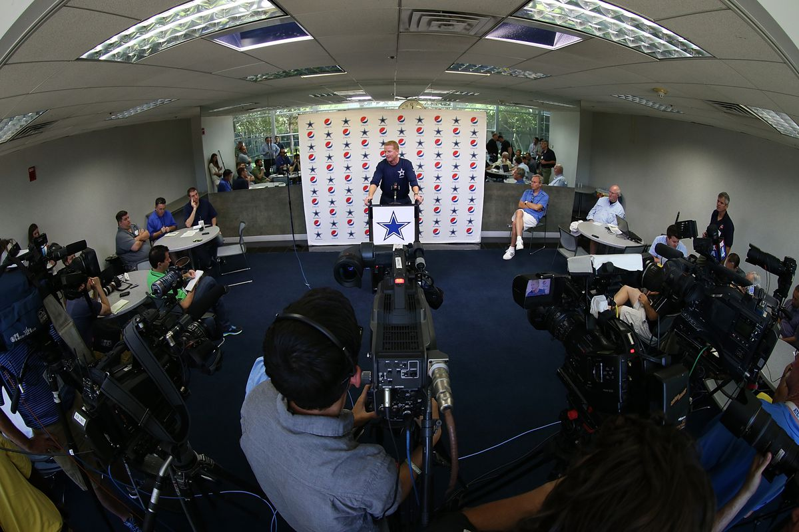
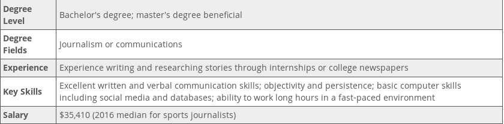

What is Sports Journalism?
Sports journalists write about and report on amateur and professional sports. As a sports journalist, you can expect a variety of job duties such as reporting game statistics, interviewing coaches and players and offering game commentary. You can work in a variety of media, including radio, television and print.

What are the requirements to become a sport journalist?
For this career include excellent written and verbal communication skills, objectivity for reporting news without bias, persistence for pursuing news stories, basic computer skills including social media and databases, and the ability to work long hours in a fast-paced environment. These skills, as well as experience, weigh heavily on a sports reporter's earning potential. But, according to Payscale.com, sports journalists earned a median salary of $35,410 as of January 2016.

What is the work environment like?
A sports writer usually has an office or a desk, either at their company directly or at a home office. They may expect to write many of their stories from there, but then may expect to travel a great deal. Sports writers often travel with the teams that they cover, and therefore may expect to be on the road quite a bit. This may be a stressful job, particularly when working up against a tight deadline. Though this does allow an individual to write on a subject that they love, the stress and the travel may be challenging at times. They may find the relationships a lot of hard work too in dealing with sports figures.